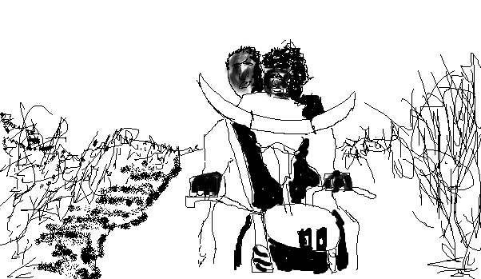

The French New Wave finally made its way to Africa in the late 1960’s, thanks in part to the postcolonial conditions on the African continent, which gave rise to the particularly influential artistic output of artists in Senegal and Mauritania, in films like Ousmane Sembène’s Black Girl (1966), Gillo Pontecorvo’s vital The Battle of Algiers (1966), and, in 1973, Djibril Mambéty’s Touki Bouki.
Though originally a commercial flop, Touki Bouki was restored in 2008 by the World Cinema Project, which “preserves and restores neglected cinema from around the world.” Past critics have noted that Touki Bouki represents a interesting aesthetic counterpoint to what is called Third Cinema, cinema best represented in films like The Battle of Algiers and Black Girl as films with revolutionary politics, their aims toward anti-capitalism and, ultimately, decolonization.
Mambèty’s nonlinear tale shows two college students, Mory (Magaye Niang) and Anta (Mareme Niang), scheme to steal some money, but after that plan fails, the two wander (and wonder) aimlessly around postcolonial Senegal. Shots repeat and spatial incongruities form Mory and Anta’s fantasy landscape, as they attempt to break free from their colonial consciousness. The real daring of Mambèty, though, is in his stark refusal to be a propagandist.
In Touki Bouki, Mambèty’s film-making is, in fact, ambiguously political, that is, he rebelliously refuses to make the sort of political statements that in many ways defined Francophone African cinema. This is not to say, of course, that Mambèty is apolitical; certainly the images of violent animal bloodletting, and the film’s famous bull-horns, Mambèty’s images of fate, say otherwise. The kind of left politics in the film, represented by a group of hostile revolutionaries who hassle Mory and Anta, shows total defiance towards the African intellectual elite.
Touki Bouki has become iconic, more recently, through its appropriation by billionaire-millionaire artists Jay-Z and Beyonce. The couple recreated an iconic image of the film—with protagonists Anta and Mory on their fledgling motorcycle with mounted bull-horns—for their On the Run II tour.
In an interview for a French newspaper, Mati Diol, Mambèty’s niece, expressed concern about the appropriation of her uncle’s images:
“It looks like it’s an art director who brought them the image, and no one has been concerned about what artistic and political story is behind it.”
Perhaps wanting to cash-in on diasporic clout, or, more likely, just wanting to seem “cool,” these black one-percenters’ narcissistic appropriation of a legendary Senegalese film, ironically, helps us understand the ways in which movie images reflect cultural and personal desires. Unlike Mory and Anta, whose daydreams blend fantasy and reality in postcolonial Senegal, Beyonce and Jay-Z’s Bonnie and Clyde emulation is more romantic than metaphorical, more presumptuous than provocative; it asks, “Can two rich people feel alienated in their own country?”
The answer is probably no, not really (that’s what we call decadence), but their example, full with bravado, evokes one particularly excellent scene from the film.
Anta and Mory pull a heist to steal a wealthy gay man’s car (he then calls the police and flirts with the investigator), nabbing some of his clothes, too. The joyride takes place on an empty road, heading into town. Mory emerges, butt-naked, on top of the car, and begins a hostile-yet-not-angry speech. In it, Mory declares victory over all his foes, real or not, describing in detail how he wrestled his way to the top. It’s an astonishingly great act of myth-making. The car, painted in red, white, and blue, provides Mambèty perhaps his most daring image of rebellion, an image that not only re-contextualizes the African story-telling tradition of Griot myth-making in postcolonial France, but also reminds the audience of an American and British colonial past. Mory’s ass-out oration mixes personal fantasy with colonial history, an appropriation of oppressive symbolism that now provides, at least for a moment, the feeling of freedom, pre-Oedipal plenitude, where anything and everything is possible. It's a better appropriation than Beyonce and Jay-Z’s because it seizes personal freedom, while the rich couple’s pretends victim status.
Mambèty’s daring in this scene reveals the importance of that kind of brazen, naked freedom that most Americans are afraid of having, let alone reflected back at them onscreen. Now, at least, through the film's recent restoration (which you can stream on the Criterion Channel) we can all appreciate Mambèty’s cheekiness.
